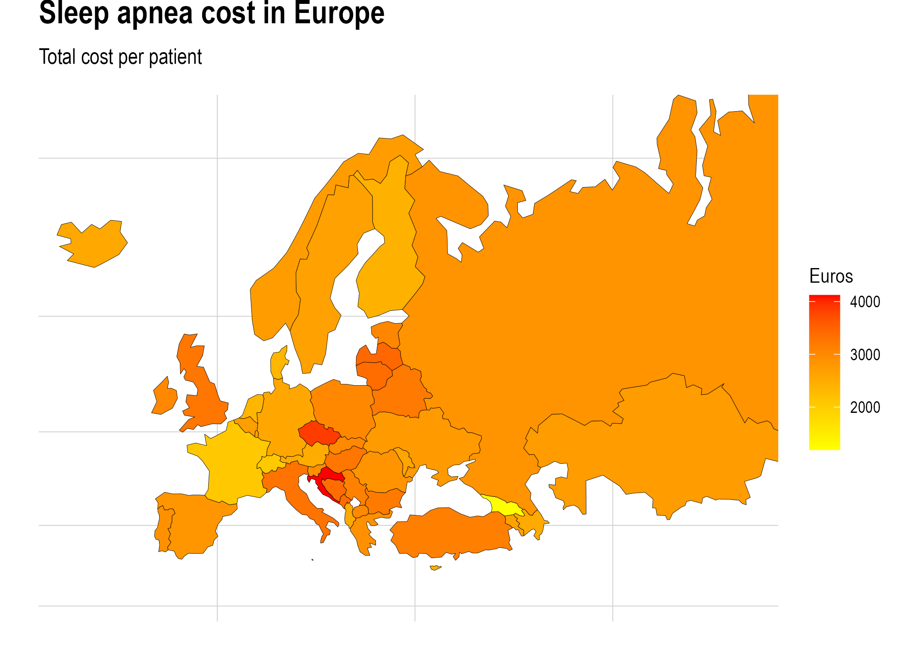

Sleep Revolution: Sleep Apnea Cost
1 Estimating costs of sleep apnea
LAST UPDATE: 2022-08-18 10:31:05
THIS PROJECT ESTIMATES SLEEP APNEA COSTS IN EUROPE. DATA IS PUBLICLY AVAILABLE AT http://ghdx.healthdata.org/ BY CC BY-NC-ND 4.0 LICENCE. RESULTS CAN BE REPLICATED BY THIS GUIDE. DATA IS COLLECTED FROM THE YEAR 2019.

## [1] "Albania" "Armenia" "Austria"
## [4] "Azerbaijan" "Belarus" "Belgium"
## [7] "Bosnia and Herzegovina" "Bulgaria" "Croatia"
## [10] "Cyprus" "Czechia" "Denmark"
## [13] "Estonia" "Finland" "France"
## [16] "Georgia" "Germany" "Greece"
## [19] "Hungary" "Iceland" "Ireland"
## [22] "Italy" "Kazakhstan" "Latvia"
## [25] "Lithuania" "Luxembourg" "Malta"
## [28] "Republic of Moldova" "Montenegro" "Netherlands"
## [31] "North Macedonia" "Norway" "Poland"
## [34] "Portugal" "Romania" "Russian Federation"
## [37] "Serbia" "Slovakia" "Slovenia"
## [40] "Spain" "Sweden" "Switzerland"
## [43] "Turkey" "Ukraine" "United Kingdom"Sleep apnea cost can be estimated by top-down calculation method presented in Armeni et al. (2019) Cost-of-illness study of Obstructive Sleep Apnea Syndrome (OSAS) in Italy. This project utilizes estimation method with other open data science methods for 42 countries. Guide follows step-by-step data processing by R and packages such as duckdb, tidyverse, vroom and dplyr.